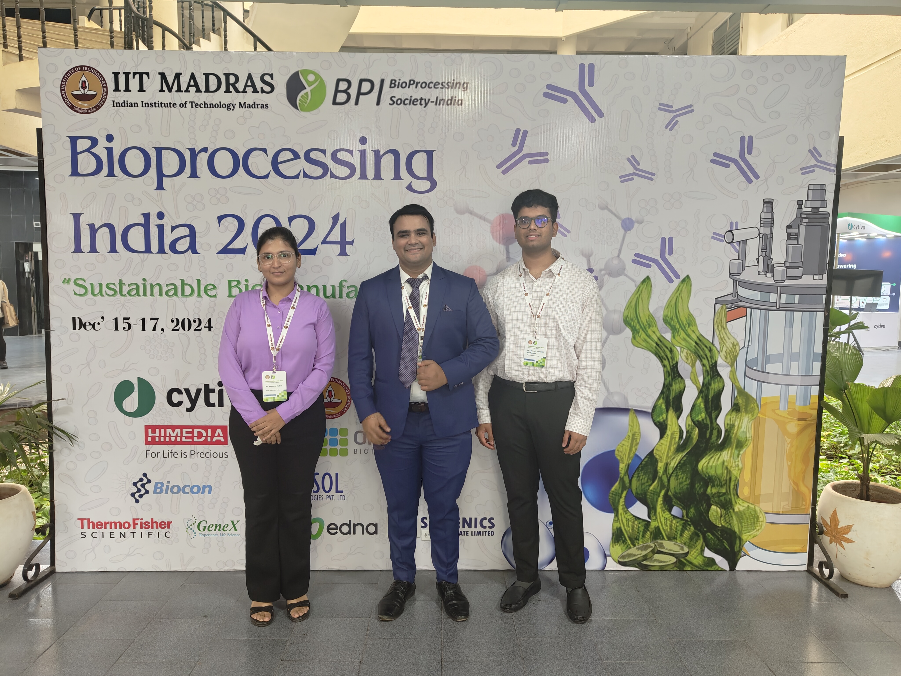
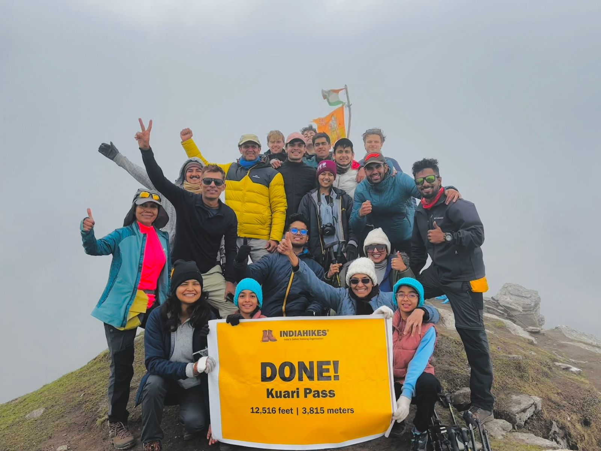

Hey! I am Shobhith Vadlamudi, a fourth year undergrad from IIT Madras. I am currently pursuing a dual degree which includes a Bachelors degree in Engineering Design and a Masters in Data Science. I am all set to graduate by May 2026. Do check out my CV if interested
Experience
BioProcess R&D Intern - Pfizer
December 2024 - Present
Developed an interactive GUI for laboratory scientists to run ion-exchange chromatography simulations using CADET.
Conducted research on modeling Ion Exchange (IEX) and Hydrophobic Interaction Chromatography (HIC) processes using Physics-Informed Neural Networks (PINNs).
Validated model predictions with experimental data, achieving high fidelity in capturing key chromatographic behaviors.
Active Knee Prosthesis Development - Cybathlon 2024
January 2024 - Present
Placed 8th out of 13 teams in Cybathlon 2024.
Developed a signal processing board for force & angle measurements, wirelessly relaying data & tunable parameters.
Minimized lag in 3-axis angle readings by off-loading filtering processes, obtaining accurate 2-DOF pose estimates.
SENAI Lab - IIT Madras
February 2024 - December 2024
Conducted in-depth research on predictive coding models for information processing in the brain.
Developed a programmable algorithm based on predictive coding to enhance object detection accuracy.
Interests
This document uses a few extra classes here and there, but mostly
it’s just markup. This, for instance, is a regular paragraph.
Papers
I plan to use this section to showcase my work and also keep track of some interesting papers which I've come across or want to read in the future.
Media

At the Bioprocess India 2024 conferenceTeam Asai at Cybathlon 2024 at Zurich, Switzerland!

My first Himalayan trek - Kuari Pass
Acknowledgements
This webpage template is inspired from this tweet.